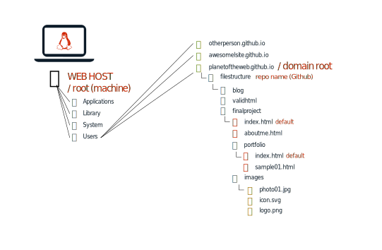

The HTML Outline

Right click -> Inspect
Author Notes
When you create a page, you start with some text and what you’re doing as a developer is adding markup to that content that helps define the structure of the page. You can think of it as creating an outline of a book. The book might have a title and some headlines or other content.
You can take a peek at this outline using different browsers. In Google Chrome, you can right click on a page and then choose inspect. You’ll be taken to a special developer view where you can see the outline that HTML is describing.
On the left side of the elements tab, you’ll see a series of triangles that you can use to expand and collapse the outline. There’s also an outline navigation bar at the very bottom of the page.
Notice that when you hover over the content on the page or you make selections on the elements tab, the browsers will highlight that area of the page.
Your editor can also do that, but only if you’re using whitespace to intent code properly.
Structural Elements
- Block level
- Define areas
- Common and generic
Author Notes
Structural elements in HTMl are a set of block level elements that help you futher enhance the structure of your sites. By block level, we mean that these are major sections of your site which are usually displayed as having space before and after the section.
They are useful because them make it easy to define areas of content and separate the regular content from utility areas on your HTML. So for example, you can identify a section of code to represent a footer. That usually means the bottom of a page or even another section with some supporting content.
They are usually fairly common areas that people have on websites like headers, footers, navigation, sidebars, etc. Although these names have specific conotations in terms of usage, they are flexible enough so that they can take on a few different contexts. For example, you can have the footer tag come to define the bottom footer of the whole page, but it could also mean a footer at the bottom of some html displaying a product.
Header
- Introductory content
- Inside other elements
Author Notes
The header element represents introductory content and it’s often used at the top of a page. At the top of the page it often contains the navigation for the site or some introductory content.
It can sometimes be confused with the head element which is used for items you don’t want the browser to display.
However, a header can also be used inside other elements, so for example you can have a sidebar header or an article header.
Footer
- Ending of content
- Often at bottom
Author Notes
A footer element represents is a special section that represents the footer or the end of some level of content.
It’s often used at least at the bottom of a website to represent things like copyright information, information about the author of the website, copyright information and links to related documents.
However, just like with the header, it can also be used to define the beginning part of an element like a card, a sidebar, and article or others.
Nav Element
- Major blocks
- Screen readers & search engines
ULorA
Author Notes
The role of the nav element is to identify major blocks of navigation. This is an important distinction because it means that smaller grouping of links should not necessarily receive nav elements. It’s up to you to determine when a grouping of links should be identified as a nav. Generally it’s meant for links that are internal to the website.
Most pages have at least some navigation at the top of the page as well as some secondary bottom navigation or maybe some sidebar navigation.
Identifying navs in your document can help screen readers as well as search engines understand the role of these set of links better. So, for example screen readers might omit the rendering of this section and search engines might be able to use these to navigate through an entire website.
This is a compound tag and inside these people usually have either a list element UL or just a set of links A. Technically, a list element is considered more appropriate for a navigation, but a series of links isn’t uncommon.
Article
- Can stand alone
- Should have headings
- Can be nested
Author Notes
The article element is one of those hard to explain elements. It represents a complete, self-contained composition in a document, page, application or site. These could be things like forum posts, magazine or newspaper articles, blog entries, user-submitted comments, interactive widgets, etc. It should be something that can stand alone on a page.
I tend to think of the article element as one of two things, like a literal article that someone writes or as an article of clothing. So if you’re looking at a list of shoes on nike.com, each of the pieces of code describing the shoes could be thought of as an article.
Articles should include a heading h1-h6 inside the article tag. You can also nest articles inside other articles (say a list of the types of shoelaces options you can get for the shoes).
In the example above, I could have tagged each ‘article’ as an artile, but because it is a grouping of articles and I have a headline that identifies the grouping, it’s fine to use the article tag for the entire grouping.
Section
- Thematic grouping
- Should have headings
- Can be nested
Author Notes
The section element can be as confusing as the article element and it’s description is somewhat generic by nature. It represents a thematic grouping of content. That means that sections are part of a bigger grouping of elements. A page could be split into sections for things like introduction, news items, contact information, etc.
If it can stand alone, it should probably be an article, if it a piece that is part of another element, then it can be a section.
Main
- The main thing
- Nested intelligently
Author Notes
Thankfully, the main element is really easy to figure out. It represents the main content of the body of a document or portion of the document. It consists of content that is directly related to the central topic of, a document or the central functionality of an application. It can be really useful to screen readers and search engines so that they can immediately identify the most important content in your document.
You can use multiple
Aside
- Related content
- Can appear many times
- Do not use for pullquotes
Author Notes
The HTML aside element represents a portion of a document whose content is indirectly related to the document’s or other element’s main content.
They can appear many times within a document whenever there is some related content in an article or section, but it’s also often used for a sidebar on a website.
The specifications say that asides shouldn’t be used for things like pullquotes because they are considered to be part of the current element, so use it only for related elements.
Div
- Generic grouping
- No meaning
- Class or IDs
Author Notes
The DIV tag is what we call a generic block level tag because it’s used to group content, but not pass any sort of meaning to the content. Before things like the article, nav and footer tags existed, the div tag was used to create those elements.
Because they have no meaning, it means that it’s often used for layout purposes or when a grouping needs to be made for which there is no existing tag. It’s sort of a measure of last resort.
You can add meaning to a div using the class or id attributes. As a matter of fact before the modern semantic tags existed, you assigne the meaning to divs using these. So for example would would create div with a class of nav
1 | <div class="nav"> |
The problem with this approach is that humans weren’t always consistent with their naming conventions, so some people would use a class of nav and others a class of navigation or topnav, etc. Because things got messy, HTML5 introduced consistent elements for commonly used segments of code (nav, aside, header, footer).
If you do create groupings using div, you can use the id or class attributes as I mentioned. The main difference between these is that an ID shoud be unique on the page. So if you create an element with an ID of topnav.
1 | <div id="topnav"> |
Then that element shouldn’t exist anywhere else on the current page. Scripts and styles may not work properly when there is more than one element with the same ID. ID’s have one more superpower, you can link to them using anchor tags a.
If you need to use the same attribute name, then use a class attribute. Elements can have one or more classnames and more than one element on the page can have the same class name.
Links and References
Links and References
Author Notes
The web would not ne possible without links, the entire internet was started because it allowed you create documents that related to each other and the way we do that in HTML is by linking these documents. Web documents allow different types of links and the two most common are anchor links and image links. Each of those have two different attributes to refer to the links.
The anchor tag has the href, which means hyperlink reference, whilst the img tag has the src attribute, which stands for source. What’s really important is that you understand the different ways you can refer to an element using links.
The href as well as the src attributes allow you to link to documents and images in different ways. It’s useful to think of your website as a folder in a hard drive somewhere. A lot of times, that’s exactly where your files exist.

Relative Links
Links can point to those files relative to the location of your current document. We call that relative links because they are relative to the location of the current file. So, for example, you wnat to create a link to a document called sample01.html in the same folder as the current index.html file you can do it like this.
1 | <a href="sample01.html">Sample 01</a> |
Let’s say though that you are referring to a document that in a folder that is one level up from the current folder. So, from our portfolio folder, we want to link to an aboutme.html file in a folder above. You can use ../ to back up a folder level.
1 | <a href="../aboutme.html">Sample 01</a> |
Root Relative Links
There is another shortcut you can use to refer to a document relative to the domain root by using a / at the beginning of the name. This is useful because sometimes we want to access the same item but it would require different references depending on where we are referencing them from. Let’s say for example that we want to access be able to place our logo.png file on our aboutme.html as well as in our sample01.html page. If we were linking to it from our logo aboutme.html, the reference would be.
1 | <img src="images/logo.png"> |
But if we were to link it from our sample01.html file, that file is inside a folder called portfolio and the images folder is one level above that folder. We could refer to it like this.
1 | <img src="../images/logo.png"> |
But on a large website, that could be problematic because if we had several subfolder, each subfolder would require a different reference. We could simply refer to it using a root relative reference.
1 | <img src="/finalproject/projects/filestructure/images/logo.png"> |
The slash right after the quotation means that we want to create this link from the domain root (in this example case planetoftheweb.github.io). Then would come our repo name (finalproject), then the
This one is a little bit dangerous because the domain root means different things to different machines. Most computers have their own document root, so when you use a reference like the one above on your laptop, it assumes you mean that you are looking for a folder from it’s own root folder.
We often work on a copy of what’s on our server on our personal machines, so just understand that if you use this type of reference you won’t be able to preview it on your local machine properly.
Web URLs
Anytime you place documents on the web, they also get an automatic web URL. It begins with your domain URL and in our case involves a series of folders. Because we’re using github pages, our URL will also have our repo name. Assuming our domain is http://planetoftheweb.github.io and you have a repo there called filestructure and inside that you have the folder structure illustrated above, then we could link to our aboutus.html page like this.
1 | <a href="http://planetoftheweb.github.io/filestructure/projects/finalproject/aboutme.html">About Me</a> |
Default Document
If you name a page index.html, then it becomes the folder default for that folder. That means that if you’re referring to that file, you can omit the index.html part in the link. So if we wanted to just link to our finalproject/index.html file with a web URL, we could do that like this:
1 | <a href="http://planetoftheweb.github.io/filestructure/projects/finalproject">Final Project</a> |